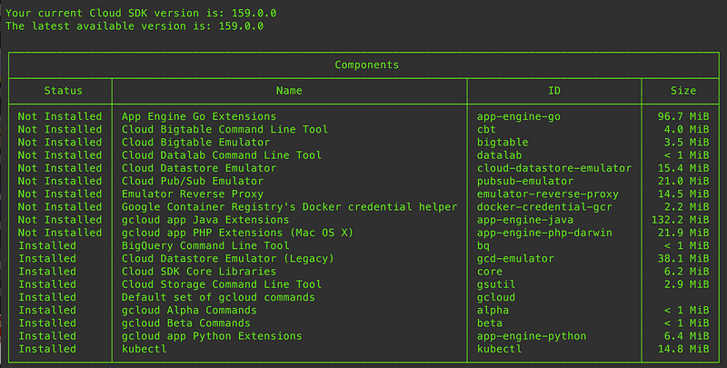

gcloud docker sudden #FAIL
gcloud docker sudden #FAIL
I had been happily pushing docker images to Google Container Registry via gcloud docker -- push for as long as I can remember. Then suddenly it started to fail with an error message exactly the same as this
I am trying to push a docker image to Google's container registry but keep getting a error about Docker login having…serverfault.com
I went to Twitter and Slack to talk to other GCP experts, and I couldn’t find anybody with the exact same symptoms.
Then I realized this thing called docker-credential-gcr , which sounded interesting.

During the course of previous discussion with experts, one of them actually did mention this tool as well, so I gave it a go.
I wanted to use the gcloud default application settings, so I followed the documentation at this page:
docker-credential-gcr - A Docker credential helper for GCR usersgithub.com
And I did:
$ docker-credential-gcr configure-docker
$ docker-credential-gcr config --token-source="gcloud"
Then changed my script to use docker push instead of gcloud docker -- push and voila, it worked.
I have not idea what happened, but it worked. Oh well.